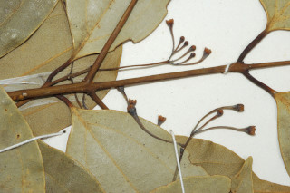
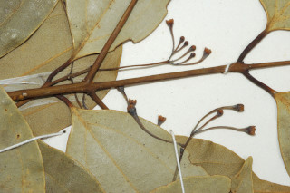

Trees 10 m tall.
10 ಮೀ.ವರೆವಿಗೆ ಬೆಳೆಯುವ ಮರಗಳು.
10 മീറ്റര് ഉയരമുളള മരങ്ങള്.
மரங்கள் 10 மீ. உயரம் வரை வளரக்கூடியது
Branchlets slender, glabrous or apex minutely adpressed pilose.
ಕಿರುಕೊಂಬೆಗಳು ತೆಳುವಾಗಿದ್ದು ರೋಮರಹಿತವಾಗಿರುತ್ತವೆ ಅಥವಾ ತುದಿಯಲ್ಲಿ ಅಪ್ಪಿಕೊಂಡಿರುವ ಉದ್ದನೆಯ ಮೃದು ರೋಮಗಳಿಂದ ಕೂಡಿರುತ್ತವೆ
നേര്ത്ത ഉപശാഖകള് അരോമിലമോ അറ്റത്ത് ചെറുതായി അടങ്ങിയ രോമിലമോ ആണ്.
சிறிய நுனிக்கிளைகள் மெல்லியது, உரோமங்களற்றது அல்லது தண்டின் நுனியில் நுண்ணிய உரோமங்களுடையது.
Leaves simple, opposite-subopposite; petiole 0.7-1.5 cm long, slender, glabrous, canaliculate; lamina 5-8.5 x 2-5 cm, linear-lanceolate to elliptic-ovate, apex acuminate to caudate - acuminate with blunt tip, acumen 1-3 cm, base acute to attenuate, subcoriaceous, glabrous, glaucous beneath; trinerved, suprabased, lateral nerves reaching not reaching the apex; tertiary_nerves horizontally_percurrent; higher order nerve closely reticulate.
ಎಲೆಗಳು ಸರಳವಾಗಿದ್ದು,ಅಭಿಮುಖ-ಉಪಅಭಿಮುಖ ಮಾದರಿಯಲ್ಲಿರುತ್ತವೆ; ತೊಟ್ಟುಗಳು 0.7-1.5 ಸೆಂ.ಮೀ. ವರೆಗಿನ ಉದ್ದವಿದ್ದು,ತೆಳು ಹಾಗೂ ರೋಮರಹಿತವಾಗಿದ್ದು ಕಾಲುವೆಗೆರೆಯನ್ನು ಹೊಂದಿರುತ್ತವೆ ;ಪತ್ರಗಳು 5-8 x 2-5 ಸೆಂ.ಮೀ ಗಾತ್ರ ಹೊಂದಿದ್ದು ಅಂಡವೃತ್ತ-ಅಂಡದ ಆಕಾರದಲ್ಲಿರುತ್ತವೆ. ಪತ್ರದ ತುದಿ ಬಾಲರೂಪಿ-ಕ್ರಮೇಣ ಚೂಪಾಗುವ ಮಾದರಿಯಲ್ಲಿದ್ದು ಮೊಂಡಾದ ಅಗ್ರವನ್ನು ಹೊಂದಿರುತ್ತದೆ ಮತ್ತು 1-3 ಸೆಂ.ಮೀ ಉದ್ದದ ಅಗ್ರವನ್ನು ಹೊಂದಿರುತ್ತದೆ;ಬುಡ ಚೂಪಾದುದರಿಂದ ಒಳಬಾಗಿದ ಮಾದರಿಯನ್ನು ಹೊಂದಿರುತ್ತದೆ;ಪತ್ರಗಳ ಮೇಲ್ಮೈ ಉಪ-ತೊಗಲ್ಲೊನ್ನೋಲುವ ಮಾದರಿಯಲ್ಲಿದ್ದು ರೋಮರಹಿತವಾಗಿರುತ್ತವೆ, ಪತ್ರದ ತಳಭಾಗ ಮಾಸಿದ ಬೂದು ಹದಿರು ಬಣ್ಣ ಹೊಂದಿರುತ್ತದೆ;ಪತ್ರಗಳು 3-ನಾಳಗಳನ್ನು ಹೊಂದಿದ್ದು ಅಗ್ರ ಆಧಾರದ ಸ್ಥಿತಿಯಲ್ಲಿರುತ್ತವೆ;ಪಾರ್ಶ್ವ ನಾಳಗಳು ಅಗ್ರವನ್ನು ತಲುಪುವುದಿಲ್ಲ;ಮೂರನೇ ದರ್ಜೆಯ ನಾಳಗಳು ಲಂಬ ರೇಖೆಗೆ ಸಮಕೋನದಲ್ಲಿರುತ್ತವೆ ಹಾಗೂ ಎಲೆದಿಂಡಿಗೆ ಅಡ್ಡವಾಗಿ ಕೂಡುವ ರೀತಿಯವು; ಉನ್ನತ ದರ್ಜೆಯ ನಾಳಗಳು ತೀರಾ ಸನಿಹವಾಗಿದ್ದು ಜಾಲಬಂಧ ನಾಳ ವಿನ್ಯಾಸದಲ್ಲಿರುತ್ತವೆ.
ലഘുവായ ഇലകള്, സമ്മുഖമോ-ഉപസമ്മുഖമോ ആണ്; ചാലുളള അരോമിലമായ നേര്ത്ത ഇലഞെട്ടിന് 0.7 സെ.മീ മുതല് 1.5 സെ.മീ വരെ നീളം; പത്രഫലകത്തിന് 5 സെ.മീ മുതല് 8.5 സെ.മീ വരെ നീളവും 2 സെ.മീ മുതല് 5 സെ.മീ വരെ വീതിയും, ആകൃതി രേഖീയ-കുന്താകാരം തൊട്ട് ദീര്ഘവൃത്തീയ-അണ്ഡാകാരം വരെയാണ്, പത്രാഗ്രം ദീര്ഘമോ മുനപ്പില്ലാത്ത വാലോട് കൂടിയ ദീര്ഘാഗ്രമോ ആണ്, വാലിന് 1 സെ.മീ മുതല് 3 സെ.മീ വരെ നീളം, പത്രാധാരം നിശിതംതൊട്ട് നേര്ത്തവസാനിക്കുന്നതോ ആണ്, ഉപചര്മ്മില പ്രകൃതം, അരോമിലം, നീലരാശി കലര്ന്ന കീഴ്ഭാഗം, അപആധാരമായി 3 ഞരമ്പുകളുളളതാണ്, അഗ്രത്തിലെത്തുന്നതോ അല്ലാത്തതോ ആയ പാര്ശ്വസികള്; തിരശ്ചീന പെര്കറന്റ് വിധത്തിലുളള ത്രിതീയ ഞരമ്പുകള്; മറ്റ് ഞരമ്പുകള് അടുത്ത ജാലിതമാണ്.
இலைகள் தனித்தவை, எதிரடுக்கமானவை - கிட்டதட்ட எதிரடுக்கம் போன்றவை; இலைக்காம்பு 0.7-1.5 செ.மீ. நீளமானது, மெல்லியது, உரோமங்களற்றது, குறுக்குவெட்டுத் தோற்றத்தில் கேனாலிகுலேட்; இலை அலகு 5-8.5 X 2-.5 செ.மீ., கோட்டு-ஈட்டி வடிவானது முதல் நீள்வட்டம்-முட்டை வடிவானது, அலகின் நுனி அதிக்கூரியது முதல் வால்-அதிக்கூரியதுடன் மொட்டையான முனையுடையது (அதன் முனை 1-3 செ.மீ. நீளமானது) அலகின் தளம் கூரியது முதல் அட்டனுவேட், சப்கோரியேசியஸ், அலகின் கீழ்பரப்பு உரோமங்களற்றது மற்றும் மெழுகு பூசியது போன்றது அல்லது சாம்பல் கலந்த நீல நிறமானது (க்களாக்கஸ்); 3 நரம்புகளை தளத்திற்கு சற்று மேலே உடையது, பக்கநரம்புகள் இரண்டும் அலகின் நுனி வரை செல்லாதது; மூன்றாம் நிலை நரம்புகள் விளிம்பை நோக்கிய கிடைமட்டத்தில் இணையான பெர்க்கரண்ட்; மற்ற சிறிய நரம்புகள் நெருக்கமான வலைப்பின்னல் போன்றது.
Inflorescence axillary or pseudoterminal panicles, slender, glabrous, few flowered; pedicels filiform.
ಹೂಗಳು ಅಕ್ಷಾಕಂಕುಳಿನಲ್ಲಿನ ಅಥವಾ ಹುಸಿ-ತುದಿಯಲ್ಲಿನ ಪುನರಾವೃತ್ತಿಯಾಗಿ ಕವಲೊಡೆಯುವ ಮಾದರಿಯಲ್ಲಿದ್ದು,ತೆಳು ಹಾಗೂ ರೋಮರಹಿತವಾಗಿದ್ದು ಕೆಲವು ಹೂಗಳನ್ನು ಹೊಂದಿರುತ್ತವೆ;ಹೂ ತೊಟ್ಟುಗಳು ದಾರದ ರೀತಿಯಿರುತ್ತವೆ.
നേര്ത്ത ഞെട്ടുളള, ഏതാനും പൂക്കള് മാത്രമുളള നേര്ത്ത അരോമിലമായ പൂങ്കുലകള് കക്ഷീയമോ ഉപഉച്ഛസ്ഥമോ ആയ പാനിക്കിളുകളാണ്.
மஞ்சரி இலைக்கோணங்களில் அல்லது கிட்டதட்ட தண்டின் நுனியில் அமைந்த பேனிக்கிள், மெல்லியது, உரோமங்களற்றது, குறைந்த எண்ணிக்கையில் மலர்களுடையது; மலர்காம்பு நூலைப்போன்றது (பில்லிஃபார்ம்)
Berry, ellipsoid, 0.8 cm long; fruiting_perianth_cup shallow; seed 1.
ಬೆರ್ರಿಗಳು ಅಂಡವೃತ್ತಾಕಾರದಲ್ಲಿದ್ದು 0.8 ಸೆಂಮೀ. ಉದ್ದವನ್ನು ಹೊಂದಿರುತ್ತವೆ; ಕಾಯಿಗಳ ಪುಷ್ಪಾವರಣ ಆಳಹೊಂದಿರುವುದಿಲ್ಲ; ಬೀಜ 1.
ഒറ്റ വിത്തുമാത്രമുളള കായ, ആഴംകുറഞ്ഞ പരിദള കപ്പോടുകൂടിയ 0.8 സെ.മീ നീളമുളള, ദീര്ഘഗോളാകാര ബെറിയാണ്.
முழுச்சதைகனி (பெர்ரி), நீள்வட்ட வடிவானது, 0.8 செ.மீ. நீளமானது; கனியிலுள்ள ப்பீரியான்ந்த் நிரந்தரமானது, ஆழமில்லாத கோப்பை போன்றது; விதை ஒன்றுடையது.


 
